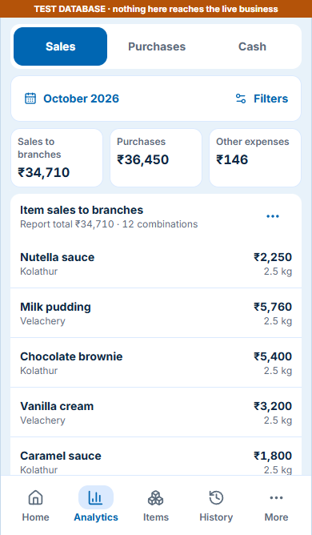
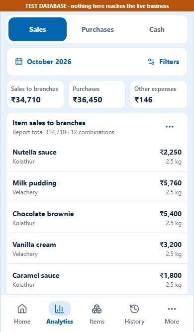

This capture could not load. Reload this local preview.

Inter — suggested weight hierarchy
Body · Regular 400
Milk pudding
Kolathur branch
Kolathur branch
Controls · Medium 500
Report filters
Export CSV
Export CSV
Heading · Semibold 600
Sales to branches
Purchases by category
Purchases by category
Key figures · Bold 700
₹75,360.00
₹1,25,000.50
₹1,25,000.50
These live text samples show a lighter hierarchy. The frontend captures retain the app’s current weights for a fair font-family comparison.